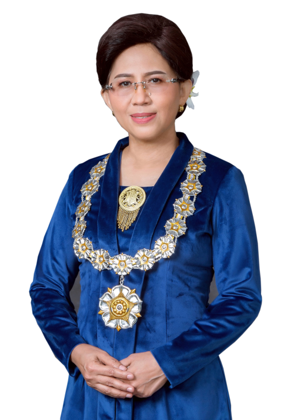
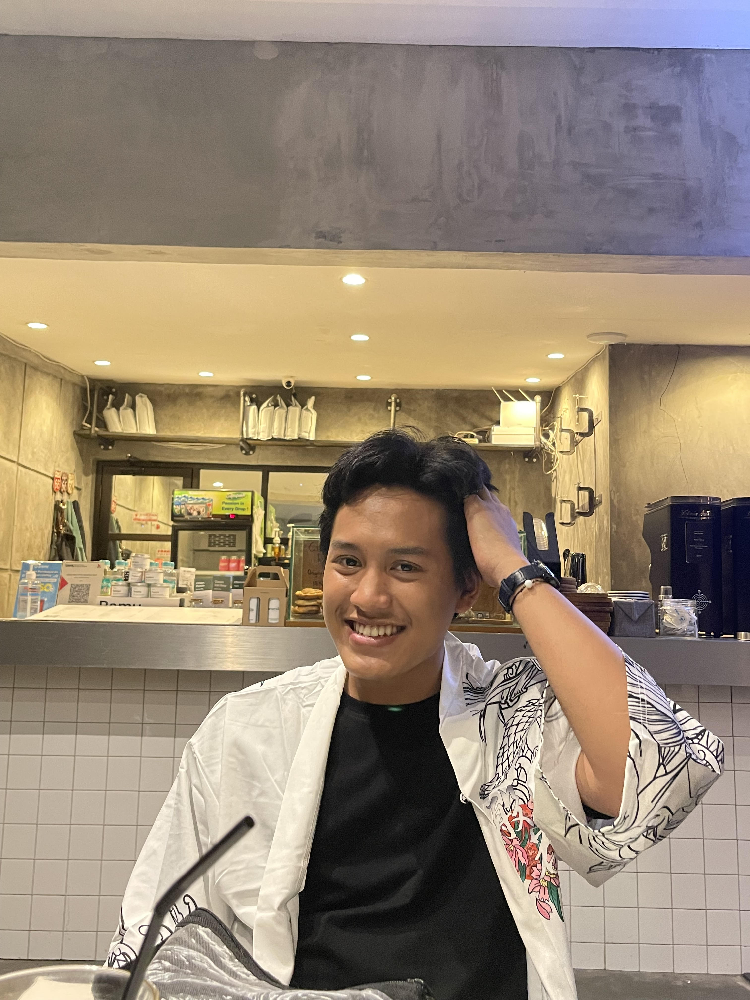

<!DOCTYPE html>
<html>
<head>
    <meta name="viewport" content="with=device-width, initial-scale=1.0">
    <title>University Website Design - Easy TUtorials</title>
    <link rel="stylesheet" href="style.css">
    <link rel="preconnect" href="https://fonts.gstatic.com">
<link href="https://fonts.googleapis.com/css2?family=Poppins:wght@200;300;400;600;700&display=swap" rel="stylesheet">
<link rel="stylesheet" href="font-awesome-4.7.0/css/font-awesome.min.css"> 
</head>
</html>
    <section class="header">
        <nav>
            <a href="index.html"></a>
            <div class="nav-links" id="navLinks">
                <i class="fa fa-times" onclick="hideMenu()"></i>
                <ul>
                    <li><a href="index.html">HOME</a></li>
                    <li><a href="about.html">ABOUT</a></li>
                    <li><a href="course.html">COURSE</a></li>
                    <li><a href="blog.html">BLOG</a></li>
                    <li><a href="contact.html">CONTACT</a></li>
                </ul>
            </div>
            <i class="fa fa-bars" onclick="showMenu()"></i>
        </nav>

    <div class="text-box">
        <h1>Universitas Gadjah Mada</h1>
        <p>Locally Rooted<br>Globally Respected</p>
        <a href="" class="hero-btn">Visit Us To know More</a>
    </div>
    
    </section>

<!------- Course ------->

<section class="course">
   <h1>Courses We Offer</h1>
    <p>The Gadjah Mada University opens a variety of gateways to educations</p>

    <div class="row">
        <div class="course-col">
          <h3>Bachelor</h3>
          <p>The Bachelor Program is the first level of an academic program, having a study load of 144 - 160 credits. The study load is scheduled for at least 8 semesters and can be completed in less than 8 semesters and for a maximum of 14 semesters after secondary education.</p>  
        </div>
        <div class="course-col">
            <h3>IUP</h3>
            <p>The International Undergraduate Program (IUP) is Universitas Gadjah Mada’s flagship program which is organized by undergraduate study programs in a number of faculties. This program requires students to gain international exposures during their study. </p>  
          </div>
          <div class="course-col">
          <h3>Vocational School</h3>
          <p>Vocational School (SV) UGM is one of 18 faculties at UGM that organizes applied undergraduate programs. SV UGM is a vocational higher education such as polytechnic, which is under the management of Universitas Gadjah Mada (UGM). SV UGM has advantages over other vocational higher education.</p>  
        </div>
    </div>


</section>

<!------- campus ----->

<section class="campus">
    <h1>The ERD</h1>
    <p>UGM has 18 faculties and 2 schools that organize undergraduate, postgraduate, professional, specialist, diploma, and international programs.</p>
    <br>
    <p>As a World Class Research University, Universitas Gadjah Mada pays special attention to research activities and encourages lecturers and students to conduct and develop various research oriented to meet the needs of the nation.</p>
    <br>
    <p>UGM has consistently and systematically since its founding in 1949, it has struggled with the people to the grassroots to build and prosper Indonesia. UGM continues to encourage increasing the quantity and quality of research-based community service in Indonesia and internationally with the principles of sustainable development. UGM is gradually building community service leadership in the international community, among others, to disseminate both Indonesian and humanitarian values.</p>

    <div class="row">
        <div class="campus-col">
            
            <div class="layer">
                <h3>EDUCATION</h3>
            </div>
        </div>
        <div class="campus-col">
            
            <div class="layer">
                <h3>RESEARCH</h3>
            </div>
        </div>
        <div class="campus-col">
            
            <div class="layer">
                <h3>DEVOTION</h3>
            </div>
        </div>
    </div>

</section>


<!------- Facilities ----->

<section class="facilities">
    <h1>Our Facilities</h1>
    <p>Facilities for Supporting Student Activities</p>

    <div class="row">
        <div class="facilities-col">
            
            <h3>Pancasila Stadium</h3>
            <p>This stadium is located in the valley area of ​​UGM and is used for soccer, athletics, hockey, and other activities permitted by the UGM Chancellor.</p>                                    
        </div>
        <div class="facilities-col">
            
            <h3>Student Center</h3>
            <p>The Student Center consists of the Arena Management Secretariat and UKM Secretariat, meeting rooms, and halls. Arena Management is related to the permit service for the use of student facilities.</p>
            <br>
            <p>The secretariat room is used for the secretariat of the Student Activity Unit (UKM), while the hall is used for basketball, volleyball, badminton, hockey, and self-defense activities. Art activities occupy the art space</p>                                    
        </div>
        <div class="facilities-col">
            
            <h3>UGM Local Transportation Facilities</h3>
            <p>Campus Bike Service is provided for students, lecturers and education staff as well as guests of Universitas Gadjah Mada.</p>
            <br>
            <p>Campus Bikes operate within the UGM campus area and serve movement between stations.</p>
            <br>
            <p>To borrow a Campus Bike, please go to the nearest bicycle station, show your single ID Card (KTM for Students, Employee Card for Lecturers and Education Personnel), the officer will input the borrower's data in the Campus Bike Information System after which the Campus Bike can be used immediately.</p>                                    
        </div>
    </div>


</section>

<!------- testimonials ----->

<section class="testimonials">
    <h1>What People Says</h1>
    <p>Hear it directly from the people</p>

    <div class="row">
        <div class="testimonial-col">
            
            <div>
               <p>In line with the internationalization program, the number of foreign students at UGM is also increasing.</p>
               <h3>Prof. dr. Ova Emilia, M.Med.Ed.,Sp.OG(K)., Ph.D.</h3>
               <i class="fa fa-star"></i>
               <i class="fa fa-star"></i>
               <i class="fa fa-star"></i>
               <i class="fa fa-star"></i>
               <i class="fa fa-star-o"></i> 
            </div>
        </div>
        <div class="testimonial-col">
            
            <div>
               <p>There are several reasons why I chose UGM, including the following: The environment, the atmosphere of Jogja is very supportive of academic nuances, such as the habit of "hanging out" scientifically. UGM provides the scientific "hangout" facility by providing many seats and a large field.</p>
               <h3>Muhammad Haiqal Dwikusuma</h3>
               <i class="fa fa-star"></i>
               <i class="fa fa-star"></i>
               <i class="fa fa-star"></i>
               <i class="fa fa-star"></i>
               <i class="fa fa-star-half-o"></i> 
            </div>
        </div>
    </div>

</section>

<!------- Call To Action ----->

<section class="cta">
    <h1>Enroll For Our Various Online Courses<br>Anywhere From The World</h1>
    <a href="" class="hero-btn">CONTACT US</a>
</section>

<!------- Footer ----->

<section class="footer">
    <h4>About Us</h4>
        <p>Universitas Gadjah Mada was born from the struggle for the Indonesian independence revolution. Established in the early period of independence, UGM was asked to serve as the National Center for Science and Culture for the administration of national higher education.</p>
        <div class="icons">
            <i class="fa fa-facebook"></i>
            <i class="fa fa-twitter"></i>
            <i class="fa fa-instagram"></i>
            <i class="fa fa-linkedin"></i>
        </div>
        <p>Made with <i class="fa fa-heart-o"></i> by Muhammad Haiqal Dwikusuma</p>
</section>


<!--------JavaScript for Toggle Menu------->
<script>

    var navLinks = document.getElementById("navLinks");
    function showMenu(){
        navLinks.style.right = "0";
    }
    function hideMenu(){
        navLinks.style.right = "-200px";
    }

</script>

</body>
</html>